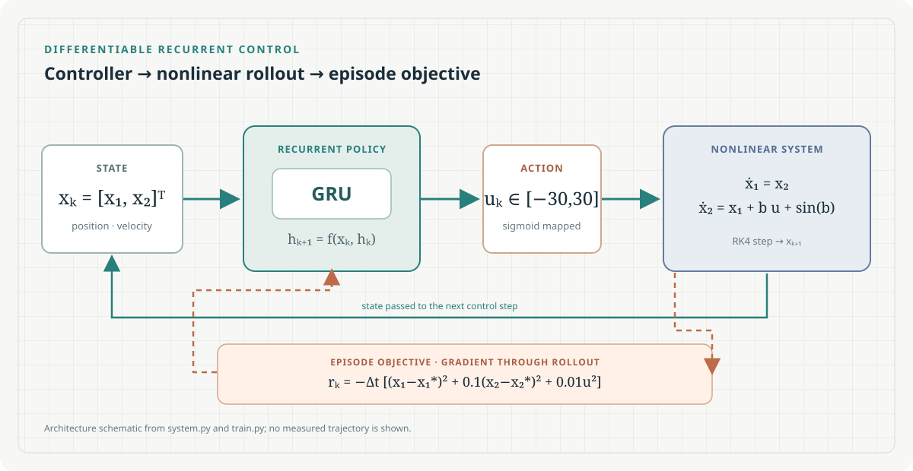

Nonlinear plant
The two-state dynamics use sampled parameter b; each integration step is computed with fourth-order Runge–Kutta.
A PyTorch implementation that trains a recurrent policy by backpropagating through simulated trajectories of a nonlinear two-state system.

system.py and train.py; no measured result shown.The rollout couples a recurrent controller with a time-stepped nonlinear model. The episode reward supplies the training objective.
The two-state dynamics use sampled parameter b; each integration step is computed with fourth-order Runge–Kutta.
A two-layer GRU maps the current state and hidden state to an action bounded by a sigmoid map.
State error and control effort are penalized at every step, with an extra terminal-state penalty.
Values below are the source defaults in the current training and evaluation configuration. Adjust them in Python before running.
The target state is [0, 0]ᵀ. The rollout accumulates step and terminal rewards; training minimizes their negative mean.
python train.py saves model and metrics under log/python evaluate.py loads the trained checkpoint from log/